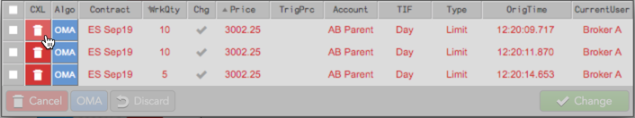
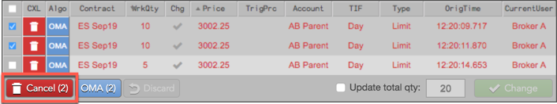

To delete an order, hover over the desired working order and click .

To delete multiple orders at once, hold the Shift key to select each order and click the Cancel button at the bottom of the Floating Order Book grid.
